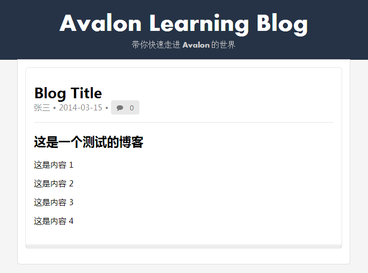

在上一章我们看到日期和内容不是我们预期的，所以我们需要对它们进行处理。在 Avalon 中可以很方便地使用 filter 来进行处理。
filter 可以用在插值表达式之后（还记得插值表达式吗？就是 {{}} 这样的内容），对 前面输出的结果进行再加工的函数。
它的写法是：
{{ expression | filter }}在 Avalon 中已经预定义了许多实用的 filter ，可以查看 filter 的文档了解更多。
这里面对我们有用的是两个: date 和 html
其中 date 可以将一个日期字段转換为各种格式，所以我们可以将 {{publish_date}} 改为 {{publish_date|date('yyyy-MM-dd')}} 。
html 则可以将文本不进行转义处理。缺省情况下，插件表达式的结果会自动进行转义。 所以我们将 {{content}} 改为 {{content|html}} 。修改后再查看页面，结果为：

如果 Avalon 提供的 filter 不能满足我们的要求，我们也可以自定义 filter。
一个基本的 filter 定义格式为：
avalon.filters.myfilter = function(str, arg1, arg2, ...){
return result;
}从上面的定义可以看出，第一个参数 str 就是前面返回的结果。除了第一个参数必须要 定义外，你还可以定义额外的参数，如前面的 date 就需要一个格式串。根据 filter 有没有参数，在使用它时，可以类似于函数调用，如 {{publish_date|date('yyyy-mm-dd')}} 也可以只是 个名字，如 {{content|html}} 。
在复杂情况下，filter还可以连用，如：
{{ prop | filter1 | filter2 | filter3(args, args2) | filter4(args)}}